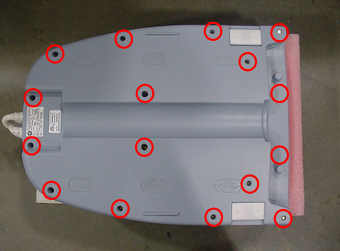
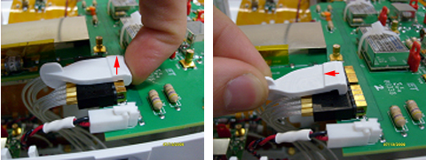
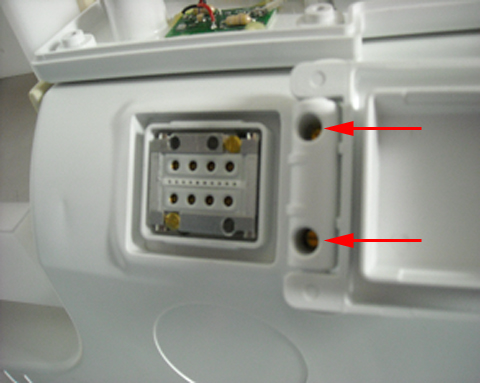
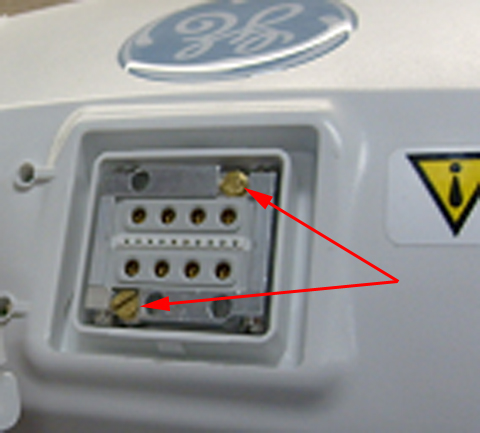
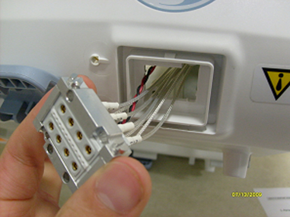
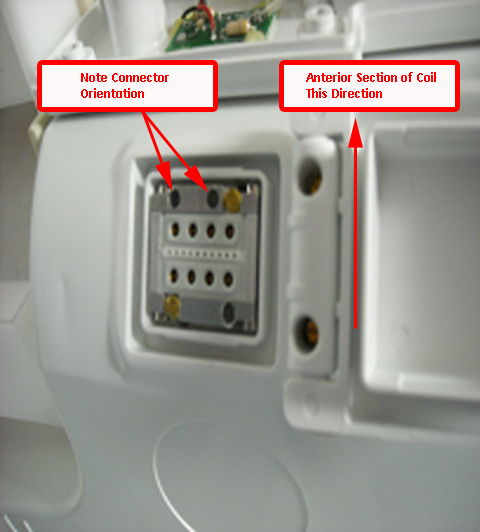
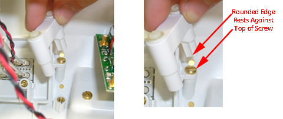
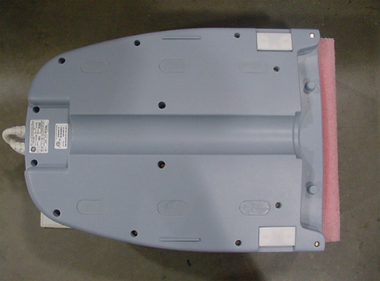

Operating Documentation
Direction 5440000, Rev# 5
Signa HDxt Service Methods
Module Version 2.0, Version Date 8/25/10
Operating Documentation |
| Required Persons | Preliminary Reqs | Procedure | Finalization |
|---|---|---|---|
| 1 | 15 mins | 1 hour | 15 mins |
This procedure applies to Revision 3, 1.5T Head, Neck, Spine (HNS) Coils only (refer to rating plate for revision number). It details the replacement of the NCU connector bracket on the posterior portion of the HNU.
| Item | Qty | Effectivity | Part# | Manufacturer | |
|---|---|---|---|---|---|
| 6 in. long 1/4 in. Slotted Screwdriver (Suggested: Screw Holder/Screw Starter) | 1 | - | - | - | |
| 1/8 in. Slotted Screwdriver | 1 | - | - | - | |
| Wrist Strap and Grounding Cord | 1 | - | - | - | |
| Item | Qty | Effectivity | Part# | Manufacturer | |
|---|---|---|---|---|---|
| FRU Kit 1.5T HNS NCU Conn Brkt | 1 | - | 5352453 | - | |
| ||||
| Follow all standard Personal Protection Equipment requirements. | ||||
| ||||
| A properly grounded wrist strap must be worn by the Field Engineer (FE) performing this procedure. | ||||
Run the HNS Coil MCQA Tool for the Posterior Head-Face and Posterior Head-Chest Horseshoe TL configurations to verify the coil is functioning properly prior to rework. Refer to 1.5T HNS Coil MCQA Setup to set up the coil.
Remove the bottom cover of Head-Neck unit. Set bottom cover and the brass screws aside.
Illustration 1: Removing Bottom Cover

Unplug NCU Connector RF and DC Cables from the CH11 Feedboard.
Gently pull up on the RF Connector Retainer, then remove it by pulling back on the small vertical tab. Set the retainer aside.
Illustration 2: Removing RF Connector Retainer

Unplug the DC Connector by pulling on the white connector housing.
Illustration 3: Unplugging DC Connector

Using a 1/8 in. slotted screwdriver, remove the two external screws from the NCU Cover, and set them aside.
Illustration 4: Removing Cover Screws

Remove the NCU Connector cover and inner threaded retainer. Set these items aside.
Illustration 5: Removing NCU Connector Cover and Retainer

Remove the two brass screws from the NCU Connector, and set them aside.
Illustration 6: Removing Brass Screws

Remove the NCU Connector by carefully pulling the cables through the posterior former wall, and set the connector aside.
Illustration 7: Removing NCU Connector

Using a 6 in. long slotted screwdriver, remove the two mounting screws from the NCU Bracket. Discard the old bracket and the brass mounting screws.
Illustration 8: Removing NCU Bracket Screws

Illustration 9: Connector Bracket Identification

Install the new bracket with the brass screws included in FRU Kit using the 6 in. long slotted screwdriver.
Illustration 10: Installing New Bracket

Reinsert the NCU Connector into the housing, and install using the two brass screws removed earlier. Tighten the screws until the connector is fully seated, then tighten an additional one-eighth turn.
Illustration 11: Reinserting NCU Connector

Reinstall the inner threaded retainer, making sure to orient it correctly.
Illustration 12: Reinstalling Retainer

While holding the inner threaded retainer, reattach the NCU cover. Tighten the screws until the cover is fully seated, then tighten an additional one-eighth turn.
Illustration 13: Reattaching NCU Cover
Reattach the RF and DC cables to the CH11 Feedboard.
Illustration 14: Reattaching Cables

Reinstall the lower cover of the HNS unit using the brass screws removed earlier.
Illustration 15: Reinstalling HNS Cover

Verify the coil functionality by running the HNS Coil MCQA Tool for the Posterior Head-Face and Posterior Head-Chest Horseshoe TL Configurations. Refer to 1.5T Head Neck Spine (HNS) Coil MCQA Setup to set up the coil.